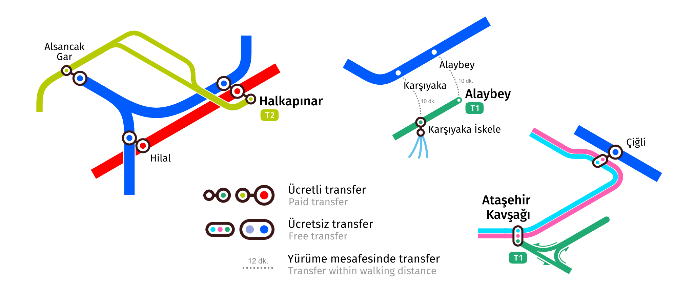
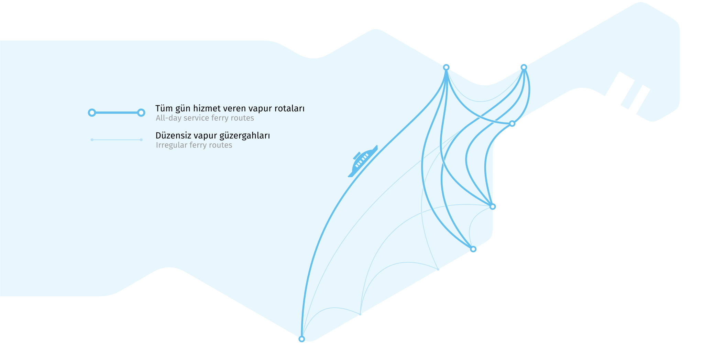
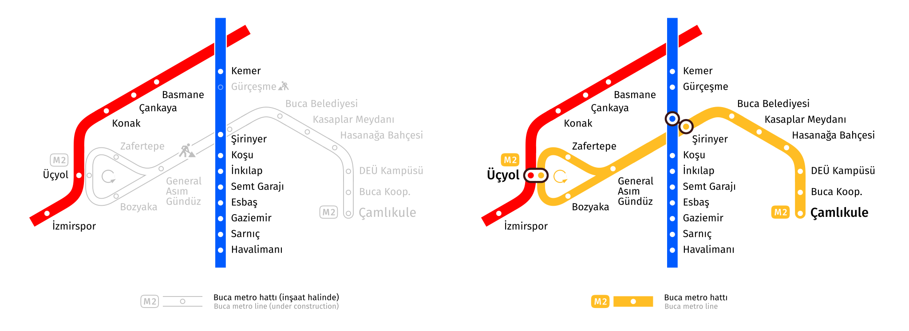
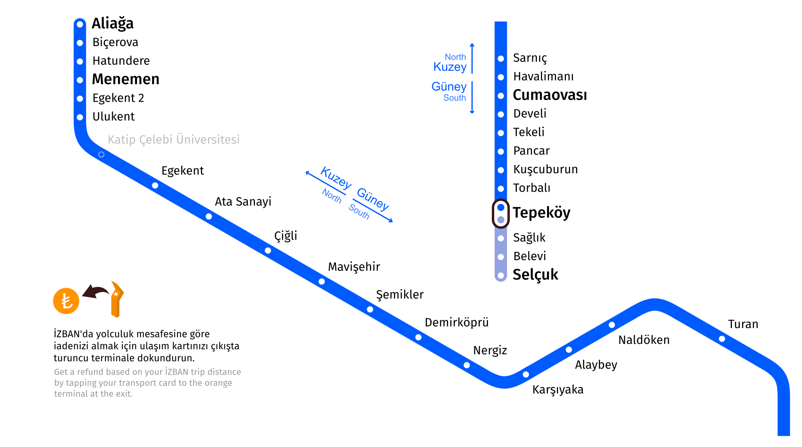
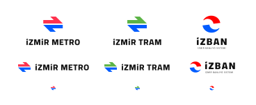

Форма линий на схеме
Схема транспорта – это не классическая карта. Если бы она показывал реальную географию маршрутов, то она была бы слишком плотной в центральных районах и почти пустой по краям. Поэтому в транспортных схемах используется искаженная география, в которой сохраняются ориентиры, которые имеют значение для выбора пассажирами маршрута.
Вот как транспортная система выглядит на географической карте в сравнении с тем, как это показано на схеме.
Треугольная сетка
60-градусная треугольная сетка очень хорошо соответствует фактической географии линий и позволяет избежать горизонтальных отрезков на схеме, с которыми возникают проблемы с размещением подписей остановок. Единственным исключением является трамвайная линия в Чили, у которой есть пара горизонтальных участков с несколькими остановками.
Пересадки
На новой карте пересадки показываются более точно. Алайбей и Каршияка, где пересадка между трамваем и İZBAN представляет собой 10-минутную прогулку по улице, или Мавишехир, где для пересадки потребуется пройти около 15 минут, больше не отмечены на карте как обычные пересадки. Вместо этого они показаны пунктирной линией со временем, которое потребуется пассажирам, чтобы добраться до другой станции. Точно так же показаны пересадки на паром в Учкуйуларе и Алсанджаке.
Паромы
Паром — важный вид транспорта в Измире, который экономит пассажирам много времени. Не показать его на карте скоростного транспорта — серьёзное упущение.
Маршруты паромов на карте разделены на два типа: регулярные и нерегулярные. Регулярные маршруты работают в течение всего дня как по будням, так и по выходным. Такие маршруты показаны толстыми линиями. Нерегулярные маршруты работают только по выходным или имеют до 4 рейсов в день. Эти маршруты изображены тонкими бледными линиями.
Цвета
На новой схеме цвета линий в общем наследуют цвета официальной схемы. İZBAN — синий, метро — красное, а трамвайные линии — зелёные.
Разные направления трамвайной линии в Чили официально обозначены двумя цветами: внутреннее — синим, а внешнее — красным. Чтобы их отличить от линий İZBAN и метро, на карте они изображены светло-синим и розовым цветами.
Оттенки всех цветов подобраны так, чтобы они были различимы людьми с дальтонизмом.
Перспективы
Схема изначально сделана с учётом отображения линии метро в Буджу, которая должна открыться через несколько лет. Также две строящиеся станции İZBAN обозначены специальным знаком.
Для трамвайной линии до станции İZBAN в Мавишехире и для станции метро в центре Борновы зарезервировано место, но сами они скрыты из-за неясных сроков начала строительства, а, тем более, его окончания. Другие новые линии метро и трамвая не показаны по тем же причинам.
İZBAN
İZBAN имеет ряд особенностей, которые необходимо отразить на карте.
Навигация на İZBAN основана на направлениях на север и юг, которые не всегда совпадают с фактическими направлениями и не очевидны для пассажиров в целом. На карте направления показаны парами стрелок, чтобы помочь людям найти нужное.
В обоих направлениях нет единых конечных станций. Половина поездов заканчивает маршрут раньше, не на последней станции направления. Такие станции выделены более крупным шрифтом, как и последние на линии. Так пассажирам проще найти на карте название станции, отображенной на табло.
Участок линии от станции Тепекёй до Сельчука работает как отдельная линия. Чтобы добраться до Сельчука из Измира или наоборот вам нужно сделать пересадку на станции Тепекёй. Этот участок показан как отдельная линия другого цвета. Весь остальной İZBAN, где не требуется пересадок, показан одним цветом, в отличие от некоторых официальных схем.
Логотипы
Сейчас логотипы метро, трамвая и İZBAN плохо выглядят в мелких размерах, поскольку у них нет вариантов без надписей. Для новой карты были созданы новые версии логотипов. Они сохраняют основную идею оригинальных значков, чтобы быть узнаваемыми, но имеют более современную и четкую форму и имеют варианты без надписей.
Как создавалась карта
Использование
Карту можно использовать бесплатно в некоммерческих целях, указав ссылку на данный сайт и не внося каких-либо изменений в изображение, за исключением масштабирования.
По вопросам коммерческого использования пишите Евгению Катышеву на почту eugkat@gmail.com.
izmirmetromap.tr, 2023-2025